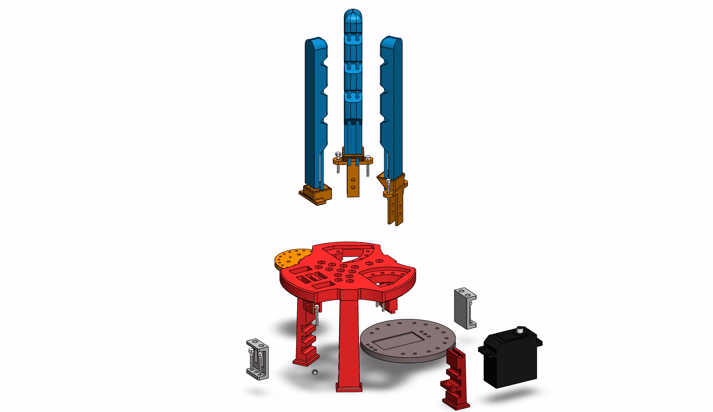
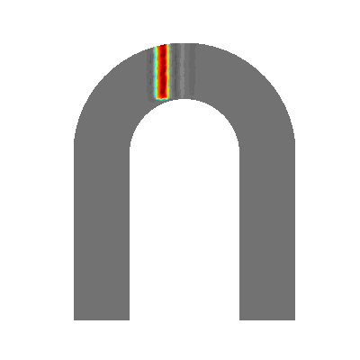

Engineering Projects Showcase
A collection of my work in robotics, control systems, simulation, and hardware design. Click on any card to view the source code.
A collection of my work in robotics, control systems, simulation, and hardware design. Click on any card to view the source code.
Hardware-in-the-Loop (HIL) control and system identification, featuring Sliding Mode Control (SMC) implementation.

Reinforcement Learning applied to Automated Manufacturing Systems for optimized and efficient sorting processes.

Integration of Large Language Models and Computer Vision to automate a robotic arm for playing chess autonomously.

Complete mechanical and CAD design of a pneumatically actuated soft robotic end-effector.

Physical hardware demonstration and testing of the fabricated soft robotic gripper adapting to various object shapes.

Custom differential drive rover integrated with LiDAR sensors, simulated in NVIDIA Isaac Sim and visualized in ROS2 RViz.

Model Order Reduction (MOR) techniques applied to simulate and analyze structural damage propagation in U-Bolts.
Complete CAD modeling and mechanical assembly mapping for a custom 4-Degrees-of-Freedom SCARA robotic arm.
Kinematic and dynamic modeling of the custom 4DOF SCARA robot tested within a MATLAB/Simulink environment.